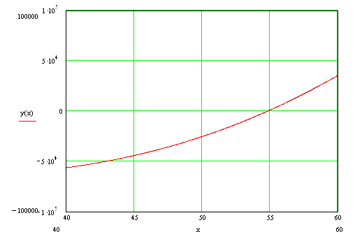

Bir Fonksiyonun Dikotomik Arama Yöntemi ile
Yaklaşık Kökünün Bulunması
İncelenecek Fonksİyon :
Alt Sınır : Üst Sınır : eps :
Maksimum İterasyon Sayisi :
SONUÇLAR :
Yaklaşık Kök = İstenilen Ondalık Sayısı =
Gerçekleşen İterasyon Sayısı :
Son İterasyonda Alt ve Üst Sınırlar Arasında
Gerçekleşen Bagıl Yüzde Fark :
Hesaplara Basla
Notlar :
1 - Bir Fonksiyonun birden fazla yaklaşık kökü olabilir. Bu köklerin yaklaşık değerleri ve bu köklerin dikotomik arama ( yarılama yöntemi) ile belirlenmesinde uygulanacak alt ve üst sınırlarının değerlerinin bulunmasinda, en iyi yöntemin bu fonksiyonun grafiğinin çizilmesidir. Bu konuda MATHCAD 2000 çok iyi olanaklar sağlar. Asağida, bu fonksiyonun bu program kullanılarak çizilmis bir grafiği görülmektedir.

2- Yakınsama kriteri eps ne kadar küçük olursa, yöntem o kadar zor yakınsayacak ve iterasyon sayısı artacaktir. Her iki değer değiştirilerek, güç yakınsayan fonksiyonlar için uygun hesaplama süreleri bulunabilir.